<title>clip_star Tour</title>
<meta name="claude:viewport-fit-sides" content="cover">
<link rel="preconnect" href="https://fonts.googleapis.com">
<link rel="preconnect" href="https://fonts.gstatic.com" crossorigin>
<link rel="stylesheet" href="https://fonts.googleapis.com/css2?family=Familjen+Grotesk:wght@500;600;700&family=Source+Sans+3:wght@400;600&family=JetBrains+Mono:wght@400;500&display=swap">
<style>
/* Layout: a product walkthrough read like an edit timeline. A sticky timecode rail marks each screen; screenshots are the evidence, text sits beside them. */
:root {
  --paper: #f3f4f8;
  --surface: #ffffff;
  --ink: #141a2e;
  --muted: #5b6278;
  --line: #dfe2ec;
  --accent: #2f45d8;
  --accent-soft: #e6e9fc;
  --rec: #e0332b;
  --note: #fff6dc;
  --note-ink: #6b4f00;
  --shot-shadow: 0 1px 2px rgba(20,26,46,.06), 0 12px 32px -12px rgba(20,26,46,.18);
  --display: "Familjen Grotesk", "Helvetica Neue", Arial, sans-serif;
  --body: "Source Sans 3", "Segoe UI", Helvetica, Arial, sans-serif;
  --mono: "JetBrains Mono", ui-monospace, "SFMono-Regular", Menlo, monospace;
}
@media (prefers-color-scheme: dark) {
  :root:not([data-theme="light"]) {
    --paper: #0e1220; --surface: #161b2c; --ink: #e8eaf3; --muted: #9ba2b8; --line: #272d42;
    --accent: #8d9cff; --accent-soft: #1e2546; --rec: #ff5a4f; --note: #2b2410; --note-ink: #f1d58a;
    --shot-shadow: 0 1px 2px rgba(0,0,0,.4), 0 12px 32px -12px rgba(0,0,0,.6);
    color-scheme: dark;
  }
}
:root[data-theme="dark"] {
  --paper: #0e1220; --surface: #161b2c; --ink: #e8eaf3; --muted: #9ba2b8; --line: #272d42;
  --accent: #8d9cff; --accent-soft: #1e2546; --rec: #ff5a4f; --note: #2b2410; --note-ink: #f1d58a;
  --shot-shadow: 0 1px 2px rgba(0,0,0,.4), 0 12px 32px -12px rgba(0,0,0,.6);
  color-scheme: dark;
}
* { box-sizing: border-box; }
body { background: var(--paper); color: var(--ink); font-family: var(--body); font-size: 17px; line-height: 1.6; }
.wrap { max-width: 1120px; margin: 0 auto; padding-left: max(16px, env(safe-area-inset-left, 0px)); padding-right: max(16px, env(safe-area-inset-right, 0px)); }
h1, h2, h3 { font-family: var(--display); line-height: 1.12; text-wrap: balance; margin: 0; letter-spacing: -0.01em; }
h1 { font-size: clamp(2.2rem, 5.4vw, 3.9rem); font-weight: 700; }
h2 { font-size: clamp(1.6rem, 3.2vw, 2.3rem); font-weight: 700; }
h3 { font-size: 1.35rem; font-weight: 600; }
p { margin: 0; }
a { color: var(--accent); }
.mono { font-family: var(--mono); font-size: .78rem; letter-spacing: .06em; text-transform: uppercase; color: var(--muted); }
.rec { display: inline-flex; align-items: center; gap: .5em; }
.rec::before { content: ""; width: .6em; height: .6em; border-radius: 50%; background: var(--rec); }
@media (prefers-reduced-motion: no-preference) { .rec::before { animation: blink 1.6s ease-in-out infinite; } }
@keyframes blink { 50% { opacity: .25; } }

/* hero */
header.hero { padding-block: 56px 40px; }
.hero-grid { display: grid; gap: 28px; }
.hero .lede { font-size: 1.2rem; color: var(--muted); max-width: 40ch; }
.ctas { display: flex; flex-wrap: wrap; gap: 12px; margin-top: 8px; }
.btn { display: inline-flex; align-items: center; gap: 8px; padding: 12px 20px; border-radius: 8px; font-weight: 600; text-decoration: none; font-family: var(--body); font-size: 1rem; border: 1px solid transparent; cursor: pointer; }
.btn.primary { background: var(--accent); color: var(--surface); }
.btn.ghost { border-color: var(--line); color: var(--ink); background: var(--surface); }
.btn:focus-visible, .shot:focus-visible { outline: 3px solid var(--accent); outline-offset: 3px; }
.hero-shot { margin-top: 12px; }

/* shots */
.shot { display: block; padding: 0; border: 1px solid var(--line); border-radius: 10px; overflow: hidden; background: var(--surface); box-shadow: var(--shot-shadow); cursor: zoom-in; width: 100%; max-width: 100%; }
.shot img { display: block; width: 100%; height: auto; }

/* team strip */
section { padding-block: 48px; }
.sec-head { display: grid; gap: 10px; margin-bottom: 28px; max-width: 62ch; }
.sec-head p { color: var(--muted); }
.roles { display: grid; grid-template-columns: repeat(auto-fit, minmax(230px, 1fr)); gap: 1px; background: var(--line); border: 1px solid var(--line); border-radius: 10px; overflow: hidden; }
.role { background: var(--surface); padding: 20px; display: grid; gap: 6px; align-content: start; min-width: 0; }
.role .was { font-family: var(--mono); font-size: .78rem; color: var(--muted); text-decoration: line-through; text-decoration-color: var(--rec); }
.role h3 { font-size: 1.12rem; }
.role p { color: var(--muted); font-size: .97rem; }

/* pipeline */
.pipe-scroll { overflow-x: auto; padding-bottom: 6px; }
.pipe { display: grid; grid-template-columns: repeat(9, minmax(108px, 1fr)); min-width: 980px; border-top: 2px solid var(--ink); }
.stage { padding: 12px 10px 0 0; position: relative; }
.stage::before { content: ""; position: absolute; top: -7px; left: 0; width: 12px; height: 12px; border-radius: 50%; background: var(--paper); border: 2px solid var(--ink); }
.stage.loop::before { background: var(--accent); border-color: var(--accent); }
.stage b { display: block; font-family: var(--display); font-size: 1.02rem; margin-top: 6px; }
.stage span { display: block; color: var(--muted); font-size: .88rem; line-height: 1.4; }
.loopnote { margin-top: 14px; color: var(--muted); font-size: .95rem; }
.loopnote strong { color: var(--accent); }

/* tour */
.tour { display: grid; gap: 72px; }
.step { display: grid; gap: 24px; align-items: start; }
.step .text { display: grid; gap: 12px; min-width: 0; }
.step ul { margin: 0; padding-left: 1.1em; display: grid; gap: 6px; }
.step li::marker { color: var(--accent); }
.try { background: var(--accent-soft); border-radius: 8px; padding: 12px 14px; font-size: .97rem; }
.try b { font-family: var(--mono); font-size: .74rem; letter-spacing: .08em; text-transform: uppercase; color: var(--accent); display: block; margin-bottom: 2px; }
.tc { font-family: var(--mono); font-size: .8rem; color: var(--muted); font-variant-numeric: tabular-nums; }
.phones { display: grid; grid-template-columns: 1fr 1fr; gap: 16px; max-width: 460px; }

/* own it */
.own { display: grid; grid-template-columns: repeat(auto-fit, minmax(240px, 1fr)); gap: 28px 32px; }
.own div { display: grid; gap: 6px; border-top: 1px solid var(--line); padding-top: 16px; min-width: 0; }
.own p { color: var(--muted); }
.mode { display: grid; grid-template-columns: repeat(auto-fit, minmax(260px, 1fr)); gap: 16px; margin-top: 32px; }
.mode div { background: var(--surface); border: 1px solid var(--line); border-radius: 10px; padding: 20px; display: grid; gap: 6px; }
.mode p { color: var(--muted); }

/* demo + close */
.demo { background: var(--surface); border: 1px solid var(--line); border-radius: 12px; padding: 24px; display: grid; gap: 14px; }
.cred { display: flex; flex-wrap: wrap; gap: 10px 24px; font-family: var(--mono); font-size: .92rem; }
.cred span { color: var(--muted); }
.copy { font-family: var(--body); font-size: .85rem; padding: 4px 10px; border-radius: 6px; border: 1px solid var(--line); background: var(--paper); color: var(--ink); cursor: pointer; }
.note { background: var(--note); color: var(--note-ink); border-radius: 8px; padding: 12px 14px; font-size: .95rem; }
.close { text-align: left; display: grid; gap: 16px; max-width: 60ch; }
footer { padding-block: 32px 48px; color: var(--muted); font-size: .9rem; border-top: 1px solid var(--line); margin-top: 24px; }

dialog { border: 0; padding: 0; background: transparent; max-width: min(1400px, 96vw); }
dialog::backdrop { background: rgba(8,10,20,.82); }
dialog img { display: block; max-width: 100%; max-height: 90vh; border-radius: 8px; }
dialog button { position: absolute; top: 8px; right: 8px; }

@media (min-width: 880px) {
  .hero-grid { grid-template-columns: 1fr; }
  .step { grid-template-columns: 340px 1fr; gap: 40px; }
  .step.flip { grid-template-columns: 1fr 340px; }
  .step.flip .text { order: 2; }
}
</style>

<header class="hero wrap">
  <div class="hero-grid">
    <p class="mono rec">clip_star · self-hosted</p>
    <h1>One long video in.<br>Clips live on every account.</h1>
    <p class="lede">clip_star finds the moments, edits them, writes the post text, schedules across all your accounts, sorts the comments and learns what works. It runs on your own machine, with your own accounts.</p>
    <div class="ctas">
      <a class="btn primary" href="#tour">Take the tour</a>
      <a class="btn ghost" href="#demo">Try the demo</a>
    </div>
    <button class="shot hero-shot" type="button" data-full="screens/01-overview.jpg" aria-label="Enlarge: Overview screen">
      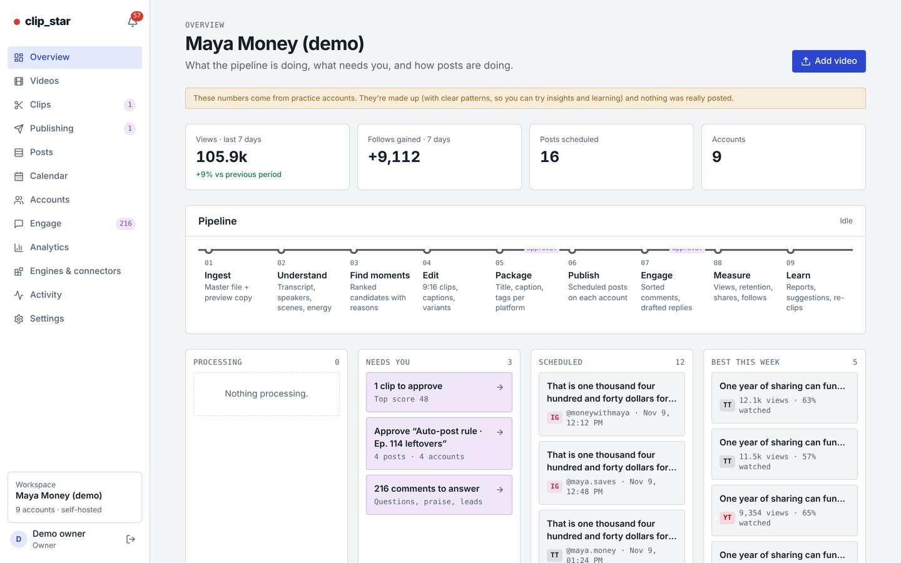
    </button>
  </div>
</header>

<section class="wrap" aria-labelledby="team">
  <div class="sec-head">
    <p class="mono">The job it does</p>
    <h2 id="team">The work you pay four people for, in one system</h2>
    <p>Running a clip operation usually means an editor, a scheduler, someone on comments and someone on reporting. clip_star does each of those jobs. You decide how much of it runs on its own.</p>
  </div>
  <div class="roles">
    <div class="role"><span class="was">editor</span><h3>Finds and cuts the clips</h3><p>Picks the strongest moments, cuts to 9:16, adds word-by-word captions, a hook title, zooms, emojis and music.</p></div>
    <div class="role"><span class="was">scheduler</span><h3>Posts across every account</h3><p>Writes the text for each platform and schedules on 8 platforms, with A/B versions, posting hours and daily caps.</p></div>
    <div class="role"><span class="was">community manager</span><h3>Sorts the comments</h3><p>Sorts questions, leads, praise, criticism and spam, and drafts replies for you to send or auto-send.</p></div>
    <div class="role"><span class="was">analyst</span><h3>Learns what works</h3><p>Tracks views, watch time and followers, finds the patterns and steers the next clips toward them.</p></div>
  </div>
</section>

<section class="wrap" aria-labelledby="pipeline">
  <div class="sec-head">
    <p class="mono">How it works</p>
    <h2 id="pipeline">Nine stages, each one swappable</h2>
    <p>Every stage runs a free, open-source engine by default. Swap in a tool you already pay for, with your own key, whenever you like.</p>
  </div>
  <div class="pipe-scroll" role="region" aria-label="Pipeline stages" tabindex="0">
    <div class="pipe">
      <div class="stage"><span class="tc">01</span><b>Ingest</b><span>Upload, Drive, Dropbox, or a new YouTube upload</span></div>
      <div class="stage"><span class="tc">02</span><b>Understand</b><span>Transcript, speakers, scenes, energy</span></div>
      <div class="stage loop"><span class="tc">03</span><b>Find moments</b><span>Scored clips with reasons</span></div>
      <div class="stage"><span class="tc">04</span><b>Edit</b><span>9:16, captions, hooks, A/B</span></div>
      <div class="stage"><span class="tc">05</span><b>Package</b><span>Title, caption, tags per platform</span></div>
      <div class="stage"><span class="tc">06</span><b>Publish</b><span>Scheduled on every account</span></div>
      <div class="stage"><span class="tc">07</span><b>Engage</b><span>Comments sorted, replies drafted</span></div>
      <div class="stage"><span class="tc">08</span><b>Measure</b><span>Views, retention, shares, follows</span></div>
      <div class="stage loop"><span class="tc">09</span><b>Learn</b><span>Feeds back into Find moments</span></div>
    </div>
  </div>
  <p class="loopnote"><strong>The loop:</strong> what performed well this week changes which moments it picks next week, separately for each creator.</p>
</section>

<section class="wrap" id="tour" aria-labelledby="tour-h">
  <div class="sec-head">
    <p class="mono">The tour</p>
    <h2 id="tour-h">Follow one podcast episode from upload to results</h2>
    <p>The demo is "Maya Money", a made-up finance creator with one 5½-minute episode and 9 accounts. The clips were cut by the real pipeline. Click any screen to enlarge it.</p>
  </div>
  <div class="tour">

    <article class="step">
      <div class="text">
        <p class="tc">01 · Videos</p>
        <h3>One long video in</h3>
        <ul>
          <li>Upload a file, paste a Google Drive or Dropbox link, or get an alert when a new YouTube upload appears.</li>
          <li>Watch it move through every stage, with plain-language errors and automatic retries.</li>
          <li>Fix a transcript word once, and it's fixed in every clip.</li>
        </ul>
      </div>
      <button class="shot" type="button" data-full="screens/02-video.jpg" aria-label="Enlarge: Video screen">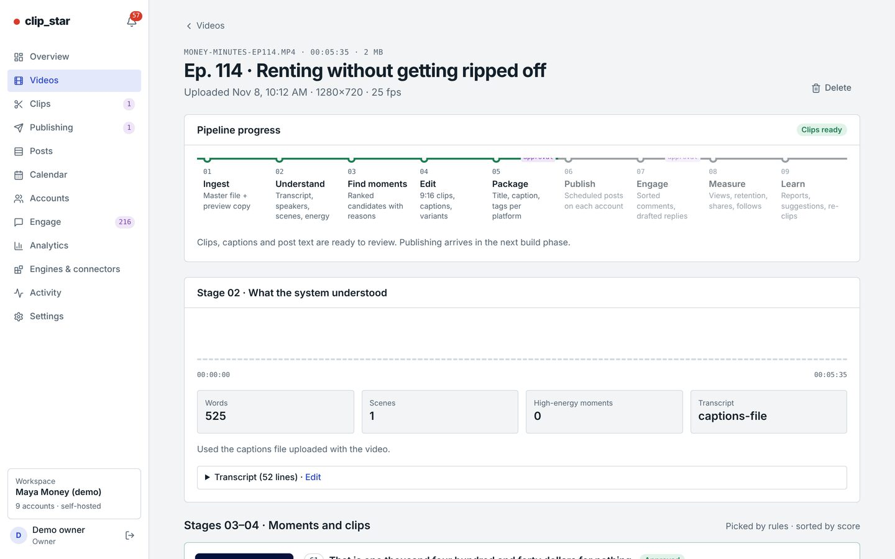</button>
    </article>

    <article class="step flip">
      <div class="text">
        <p class="tc">02 · Clips</p>
        <h3>It picks the moments and says why</h3>
        <ul>
          <li>Each clip has a score, its timecodes (<span class="tc">00:01:45 → 00:02:21</span>) and a plain reason: "Opens with a number; ends on a complete thought."</li>
          <li>Two rendered versions per clip: Bold word-by-word captions and Clean boxed captions, ready for A/B tests.</li>
          <li>Approve one, approve all, or let it auto-approve above a score.</li>
        </ul>
        <p class="try"><b>Try in the demo</b>Open Clips, switch to "All 8" and play both versions.</p>
      </div>
      <button class="shot" type="button" data-full="screens/03-clips.jpg" aria-label="Enlarge: Clips screen">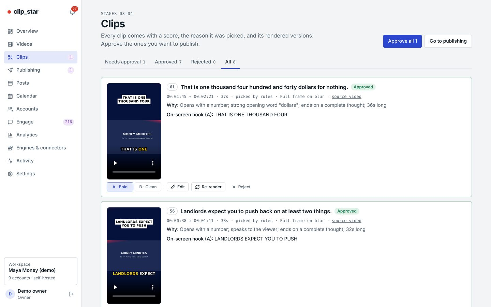</button>
    </article>

    <article class="step">
      <div class="text">
        <p class="tc">03 · Clip editor</p>
        <h3>Full control when you want it</h3>
        <ul>
          <li>Trim on sentence boundaries, change the hook, caption style, zooms, emojis, music and cover image.</li>
          <li>Edit the post text per platform, with length and hashtag checks.</li>
          <li>Dub a clip into another language with your own ElevenLabs key.</li>
        </ul>
      </div>
      <button class="shot" type="button" data-full="screens/04-clip-editor.jpg" aria-label="Enlarge: Clip editor">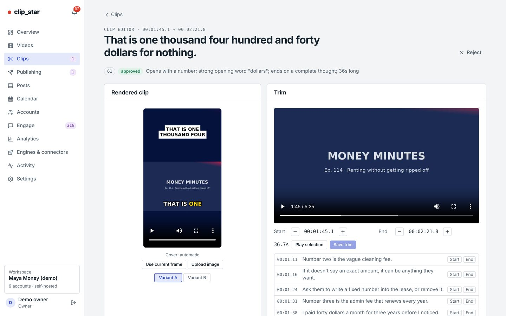</button>
    </article>

    <article class="step flip">
      <div class="text">
        <p class="tc">04 · Publishing</p>
        <h3>A batch is a whole campaign</h3>
        <ul>
          <li>Pick clips and accounts and it builds the schedule: posting hours per time zone, daily caps, spacing, A/B splits. It never posts twice.</li>
          <li>Automation rules make batches on their own. You can keep one approval click, or none.</li>
        </ul>
        <p class="try"><b>Try in the demo</b>Open the batch "Auto-post rule · Ep. 114 leftovers" and press Approve.</p>
      </div>
      <button class="shot" type="button" data-full="screens/05-publishing.jpg" aria-label="Enlarge: Publishing screen">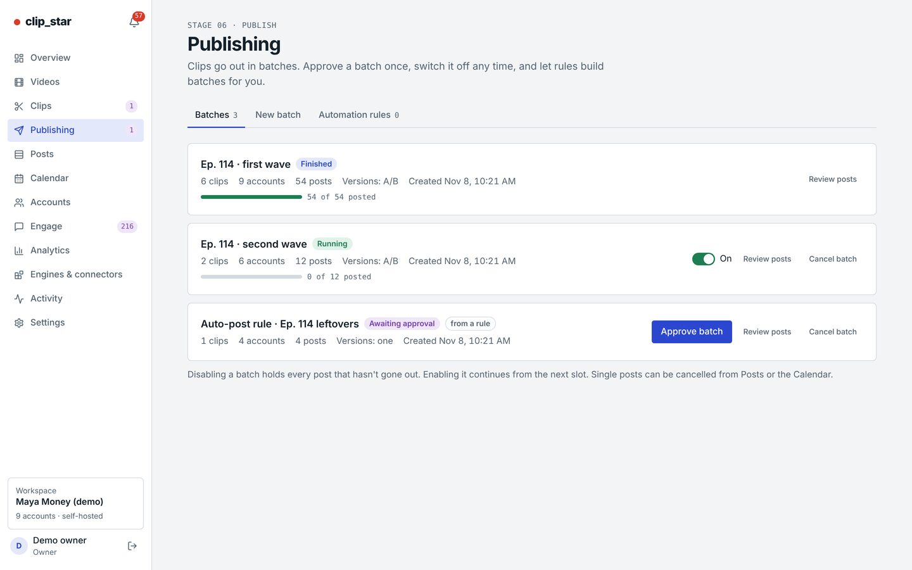</button>
    </article>

    <article class="step">
      <div class="text">
        <p class="tc">05 · Calendar</p>
        <h3>Every post on every account, in one week view</h3>
        <ul>
          <li>Drag a waiting post to another time. It warns you if the move breaks a rule, like too many posts that day.</li>
        </ul>
        <p class="try"><b>Try in the demo</b>Drag a post from Monday to Saturday.</p>
      </div>
      <button class="shot" type="button" data-full="screens/06-calendar.jpg" aria-label="Enlarge: Calendar">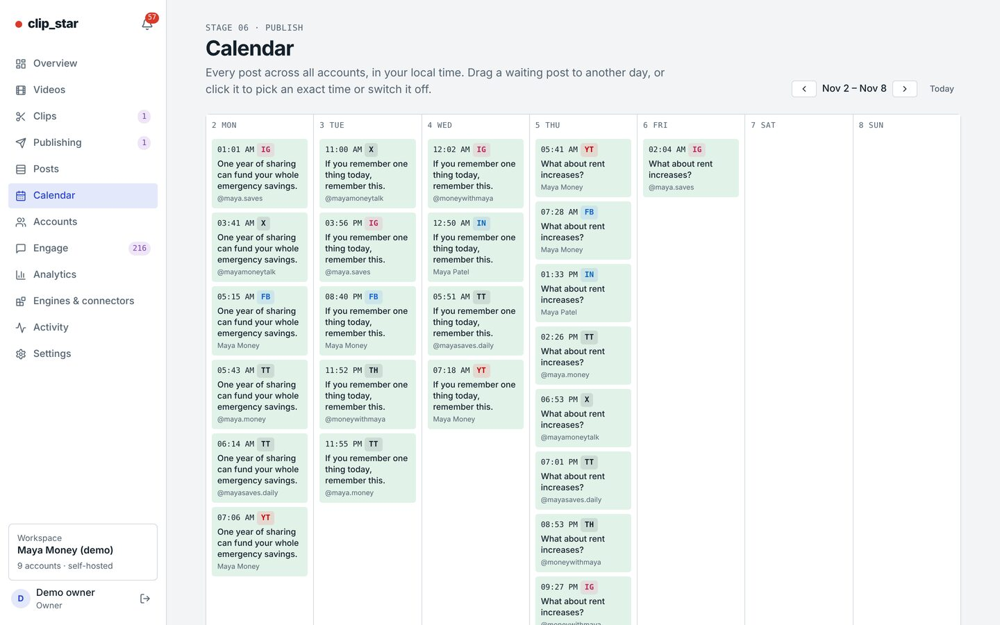</button>
    </article>

    <article class="step flip">
      <div class="text">
        <p class="tc">06 · Accounts</p>
        <h3>All your accounts, without sharing passwords</h3>
        <ul>
          <li>Instagram, TikTok, YouTube, Facebook, X, LinkedIn, Threads and Pinterest. Many accounts per platform.</li>
          <li>Each one connects through the platform's own login and official API. Tokens are stored encrypted on your machine.</li>
          <li>Followers over time and best posts, per account.</li>
        </ul>
      </div>
      <button class="shot" type="button" data-full="screens/08-accounts.jpg" aria-label="Enlarge: Accounts">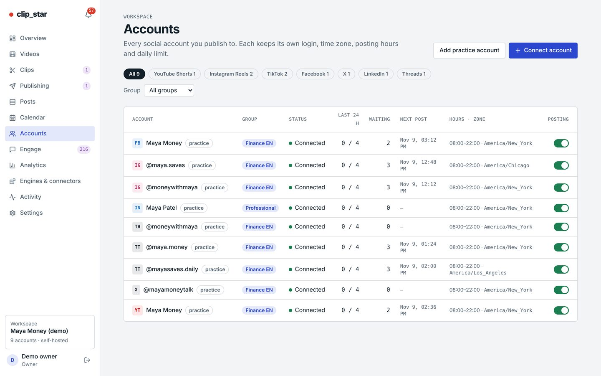</button>
    </article>

    <article class="step">
      <div class="text">
        <p class="tc">07 · Engage</p>
        <h3>Comments, sorted</h3>
        <ul>
          <li>Questions, leads, praise, criticism and spam, each with a reply draft.</li>
          <li>Send, edit or hide. Rules can auto-reply to chosen categories, with rate limits.</li>
        </ul>
      </div>
      <button class="shot" type="button" data-full="screens/10-engage.jpg" aria-label="Enlarge: Engage">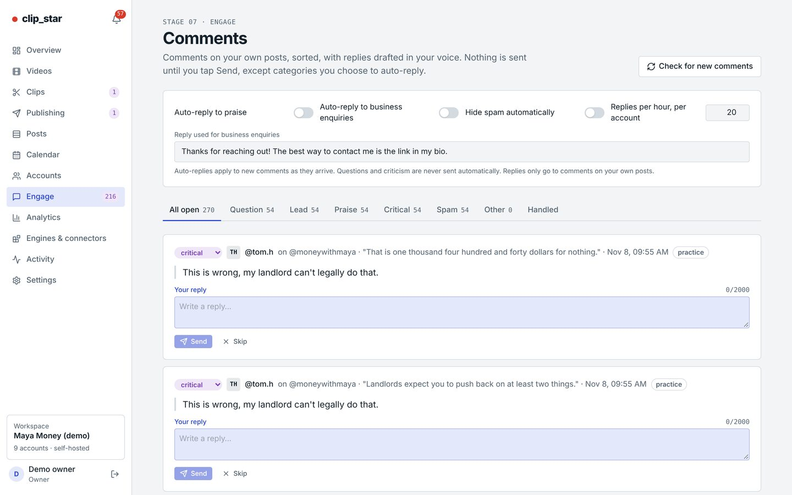</button>
    </article>

    <article class="step flip">
      <div class="text">
        <p class="tc">08 · Analytics</p>
        <h3>It tells you what to make more of</h3>
        <ul>
          <li>Views, watch time, shares and followers by day, platform and account.</li>
          <li>Insights compare clip length, hook, posting hour and caption style. In the demo: "Posts with 35–50 s got 63% more views."</li>
          <li>A weekly report by email or phone notification.</li>
        </ul>
      </div>
      <button class="shot" type="button" data-full="screens/11-analytics.jpg" aria-label="Enlarge: Analytics">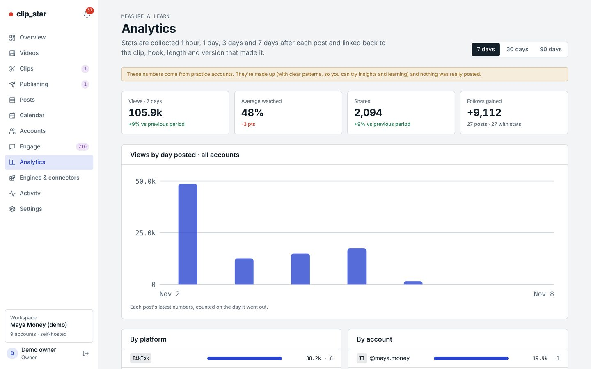</button>
    </article>

    <article class="step">
      <div class="text">
        <p class="tc">09 · Engines &amp; connectors</p>
        <h3>Free by default. Plug in what you already pay for.</h3>
        <ul>
          <li>Free engines: Whisper, the rules engine, templates, local models through Ollama.</li>
          <li>Your keys, your bill: Claude, OpenAI, Deepgram, AssemblyAI, ElevenLabs, Pexels B-roll, Klap, Vizard.</li>
          <li>A monthly spending cap. Over it, the free engine takes over.</li>
        </ul>
      </div>
      <button class="shot" type="button" data-full="screens/12-engines.jpg" aria-label="Enlarge: Engines">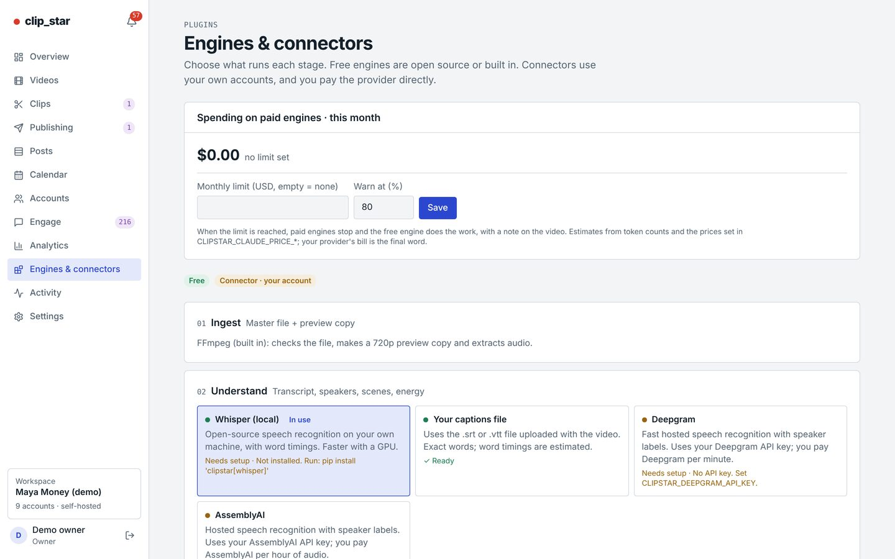</button>
    </article>

    <article class="step flip">
      <div class="text">
        <p class="tc">10 · On your phone</p>
        <h3>Approve from anywhere</h3>
        <ul>
          <li>It installs as an app, with push notifications for "batch waiting" or "post failed".</li>
          <li>Team roles: owner, editor, reviewer, viewer. One workspace per creator or brand.</li>
          <li>API, webhooks, and an MCP server so Claude and other AI assistants can run it for you.</li>
        </ul>
      </div>
      <div class="phones">
        <button class="shot" type="button" data-full="screens/15-mobile-overview.jpg" aria-label="Enlarge: phone overview">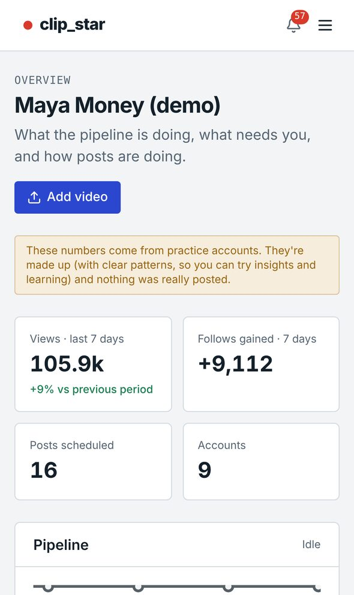</button>
        <button class="shot" type="button" data-full="screens/16-mobile-clip.jpg" aria-label="Enlarge: phone clip editor">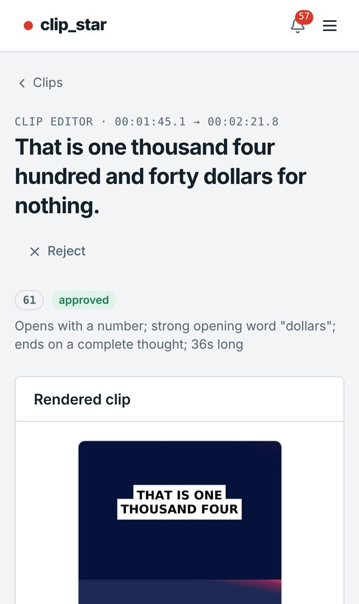</button>
      </div>
    </article>

  </div>
</section>

<section class="wrap" aria-labelledby="own">
  <div class="sec-head">
    <p class="mono">Yours</p>
    <h2 id="own">Everything stays in your hands</h2>
  </div>
  <div class="own">
    <div><h3>Your machine</h3><p>Runs on your computer or your own server with one Docker command. No per-seat subscription, no one else's cloud.</p></div>
    <div><h3>Your accounts</h3><p>Official platform APIs only. No bots, shared logins, proxies or tricks that get accounts flagged.</p></div>
    <div><h3>Your data</h3><p>Videos, clips, stats and comments live in your own database, with daily backups you control.</p></div>
    <div><h3>Your keys</h3><p>Free engines out of the box. Paid AI tools only if you choose them, billed to you directly, with a budget cap.</p></div>
  </div>
  <div class="mode">
    <div><p class="mono">Autopilot</p><h3>No person needed</h3><p>Rules approve high-scoring clips, build the schedule, post it and auto-reply to chosen comment types. You read the weekly report.</p></div>
    <div><p class="mono">One click</p><h3>Approve each batch</h3><p>Everything is prepared for you. Nothing goes public until you press Approve, from your desk or your phone.</p></div>
  </div>
</section>

<section class="wrap" id="demo" aria-labelledby="demo-h">
  <div class="demo">
    <p class="mono rec">Live demo</p>
    <h2 id="demo-h">Click around it yourself</h2>
    <p>Use the demo link from the email and sign in with:</p>
    <div class="cred">
      <div><span>Email </span><code id="demo-email">maya@moneyminutes.demo</code> <button class="copy" type="button" data-copy="demo-email">Copy</button></div>
      <div><span>Password </span><code id="demo-pass">demo-clipstar-2026</code> <button class="copy" type="button" data-copy="demo-pass">Copy</button></div>
    </div>
    <p class="note">The demo uses practice accounts. Its posts, views, followers and comments are made up, with clear patterns so the insights have something to find. Nothing was really posted.</p>
  </div>
</section>

<section class="wrap" aria-labelledby="call">
  <div class="close">
    <p class="mono">Next step</p>
    <h2 id="call">20 minutes, on one of your own videos</h2>
    <p>Reply to the email with a time that suits you. I'll run one of your long videos through clip_star live and show you the clips it picks, the post text it writes, and how it would schedule them across your accounts.</p>
    <p>Rather see results first? Send one long video and I'll send back the clips, free.</p>
  </div>
</section>

<footer class="wrap">clip_star is self-hosted software. Platform names belong to their owners; clip_star connects to them through their official APIs.</footer>

<dialog id="lightbox" aria-label="Enlarged screenshot">
  
  <button class="copy" type="button" id="lightbox-close">Close</button>
</dialog>

<script>
(() => {
  const dlg = document.getElementById("lightbox");
  const img = document.getElementById("lightbox-img");
  document.querySelectorAll(".shot").forEach((b) => b.addEventListener("click", () => {
    img.src = b.dataset.full; img.alt = b.querySelector("img").alt;
    if (dlg.showModal) dlg.showModal();
  }));
  document.getElementById("lightbox-close").addEventListener("click", () => dlg.close());
  dlg.addEventListener("click", (e) => { if (e.target === dlg) dlg.close(); });
  document.querySelectorAll("[data-copy]").forEach((b) => b.addEventListener("click", () => {
    const el = document.getElementById(b.dataset.copy);
    const done = () => { b.textContent = "Copied"; setTimeout(() => (b.textContent = "Copy"), 1500); };
    const select = () => { const r = document.createRange(); r.selectNodeContents(el); const s = getSelection(); s.removeAllRanges(); s.addRange(r); };
    try { navigator.clipboard.writeText(el.textContent).then(done, select); } catch { select(); }
  }));
})();
</script>
